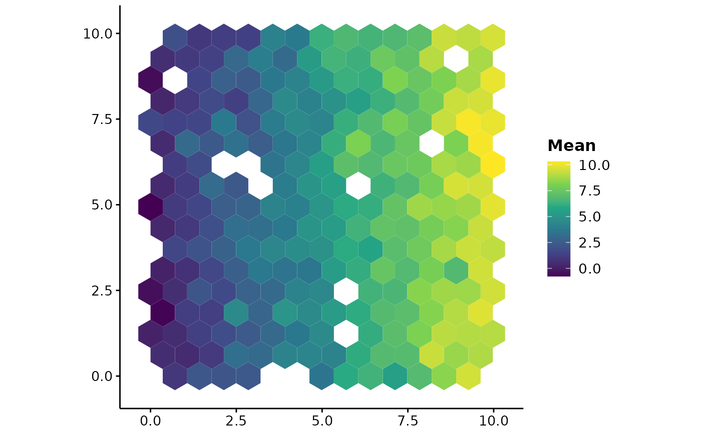
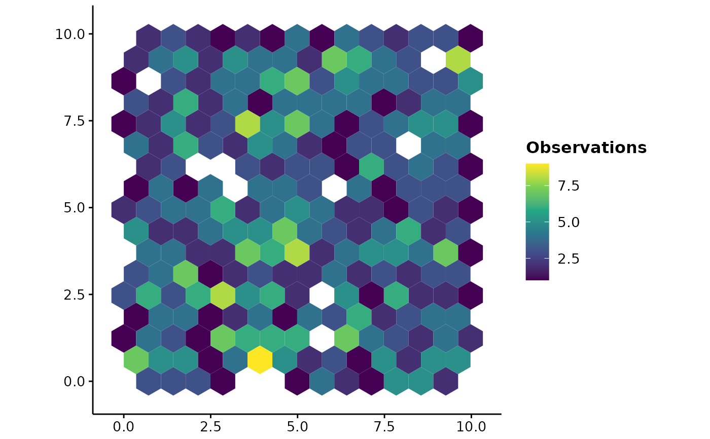

Draws the output of hex_bin(). Useful for showing survey effort or catch
at a resolution the data supports, and for aggregating a projection raster
to a cell size you can defend rather than drawing every pixel as though it
were separately estimated.
Usage
plotHexbin(
x,
value = NULL,
coords = NULL,
bins = 30,
cellsize = NULL,
fun = c("mean", "median", "sum", "sd", "min", "max", "count"),
min.n = 1,
layer = 1,
title = "",
legend.lab = NULL,
theme = theme_fancyfx(),
option = "viridis",
colour = NA
)Arguments
- x
A
SpatRaster, a data frame of points, or a frame already returned byhex_bin().- value
For a data frame, the column to summarise. Omit to count points.
- coords
For a data frame, the two coordinate columns.
- bins
Approximate number of hexagons across the x range.
- cellsize
Hexagon size, centre to vertex. Overrides
bins.- fun
How to summarise each hexagon; see
hex_bin().- min.n
Hexagons holding fewer than this many values are dropped.
- layer
For a raster, which layer to summarise.
- title
Plot title, optional.
- legend.lab
Legend title. Defaults to naming the summary.
- theme
A ggplot2 theme. Defaults to
theme_fancyfx().- option
Viridis colour map option.
- colour
Outline colour for each hexagon.
NAfor none, which is usually right at small cell sizes.
Details
The fill is a sequential viridis scale, because a binned summary is a
magnitude. See hex_bin() for why hexagons rather than squares, what
min.n is for, and the caveat about binning unprojected coordinates.
See also
hex_bin() for the binned values themselves.
Other spatial plots:
ensemble_summary(),
hex_bin(),
mess(),
niche_equivalency(),
niche_overlap(),
plot.fancyfx_equivalency(),
plotExtrapolation(),
plotUncertainty(),
thin_points()
Examples
set.seed(1)
points <- data.frame(x = runif(800, 0, 10), y = runif(800, 0, 10))
points$catch <- points$x + rnorm(800)
plotHexbin(points, value = "catch", bins = 14)

# Survey effort: how many observations fall in each hexagon
plotHexbin(points, fun = "count", bins = 14, legend.lab = "Observations")
